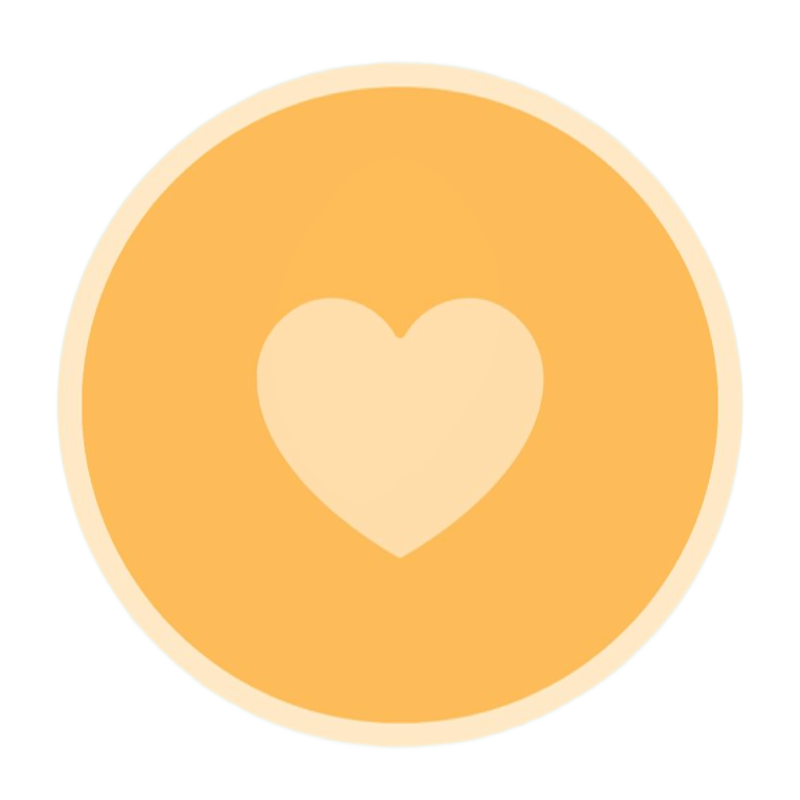
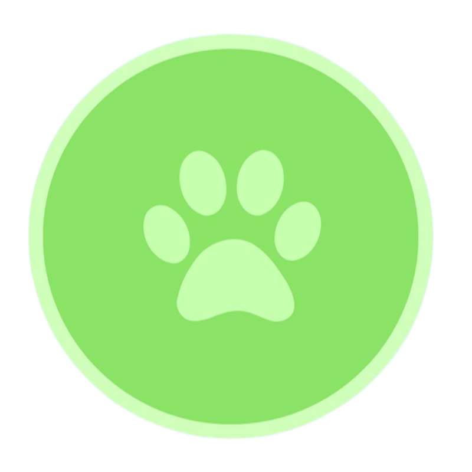

500+
familias
❤️ Itapetininga e região
UniDoações
Plataforma
Digital de
Apoio Social e Proteção
Animal
Facilitando o acesso a auxílio com alimentos e roupas para pessoas em
situação de
vulnerabilidade,
conectando doadores, ONGs e voluntários
para
promover solidariedade e inclusão social.

200+
Doadores

100+
Animais
Quem pode participar?
Nossa plataforma conecta quem precisa de ajuda com quem pode ajudar
Pessoas em Vulnerabilidade
Realize seu cadastro para solicitar
auxílio com alimentos e roupas, com
análise baseada
em
critérios sociais e
prioridade para inscritos no CadÚnico.
Doadores
Cadastre-se como doador e ofereça alimentos, roupas ou outros itens de forma organizada, segura e responsável.
ONG UIPA
Espaço dedicado à ONG UIPA, com opções de doação via PIX, doação de ração, incentivo à adoção responsável e apadrinhamento de animais.
✧ Faça parte dessa rede de solidariedade
Justo podemos fazer a
diferença
Sua participação é essencial para fortalecer ações sociais e promover
dignidade.
Cadastre-se e comece
a ajudar hoje mesmo.